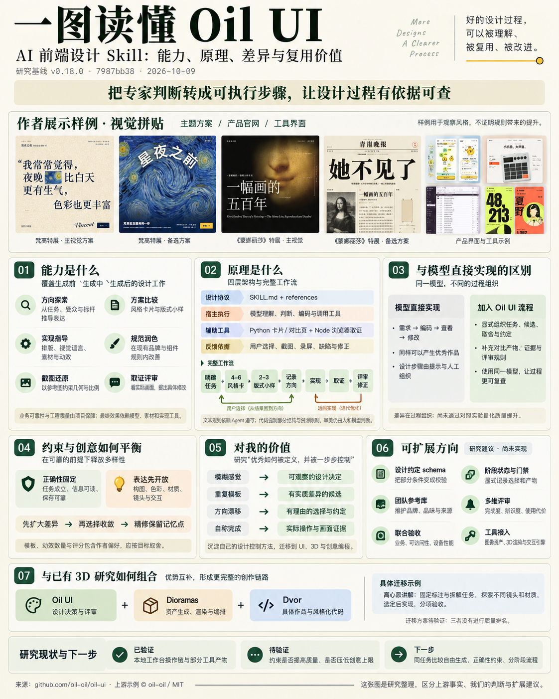
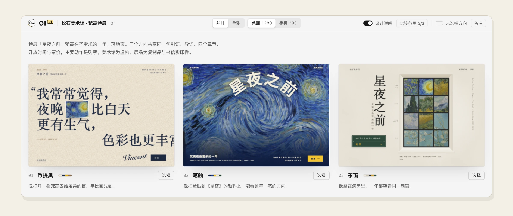
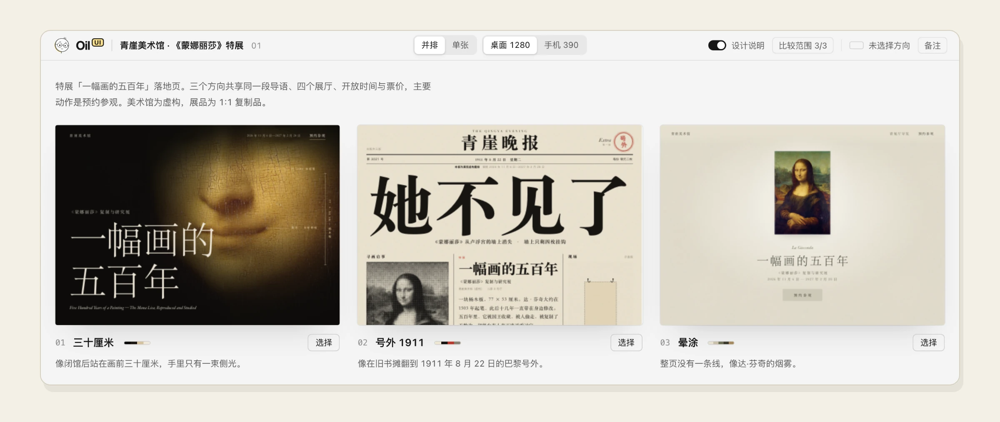
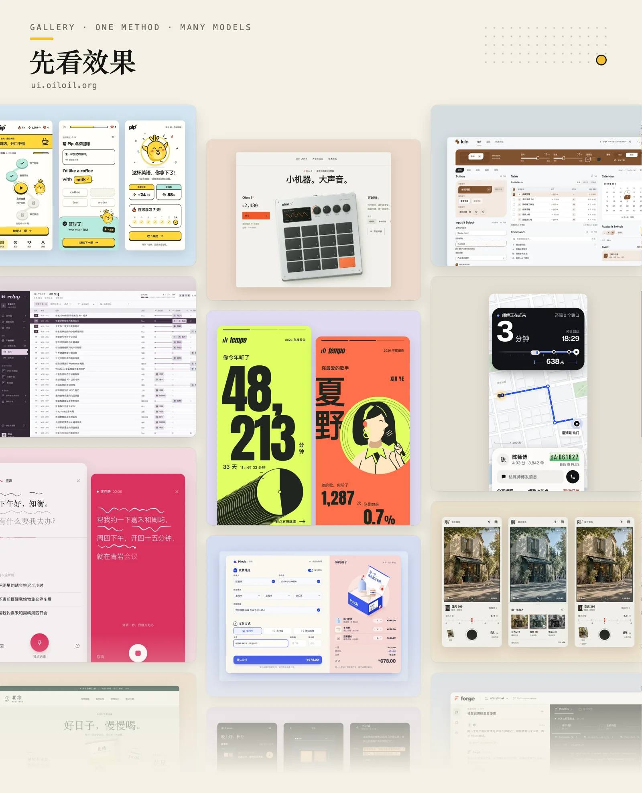
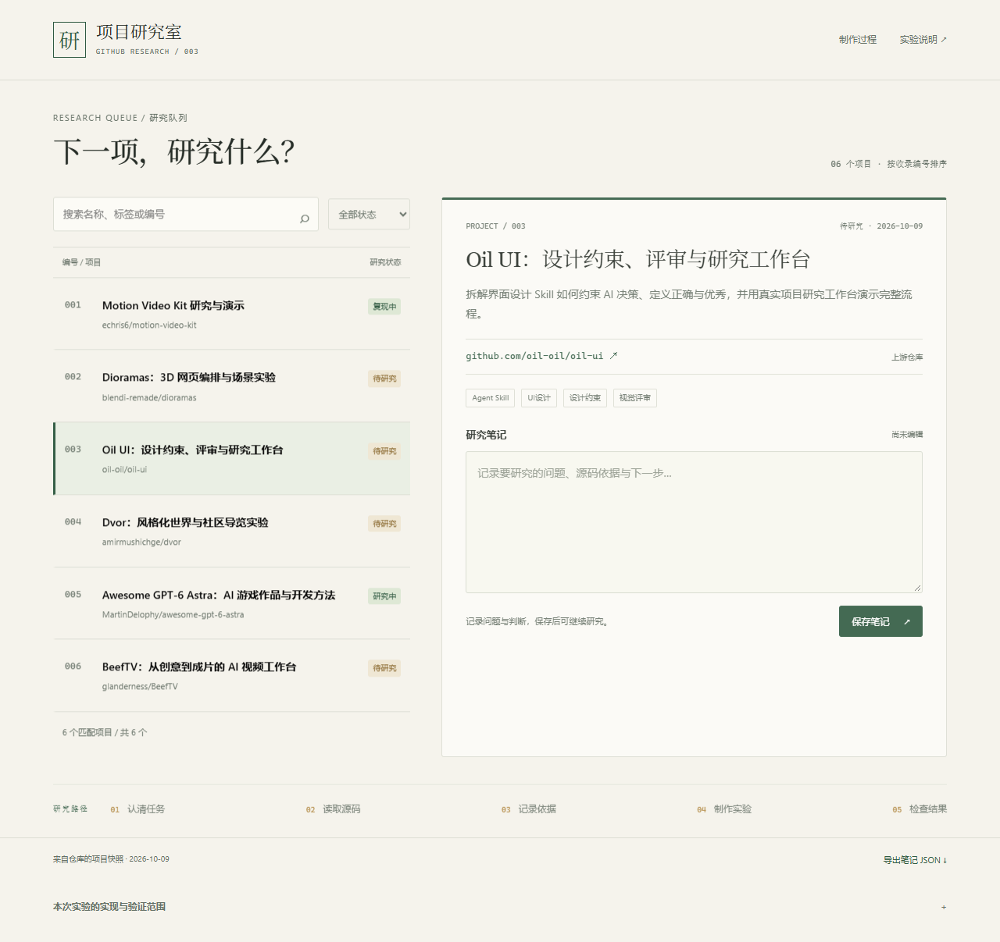
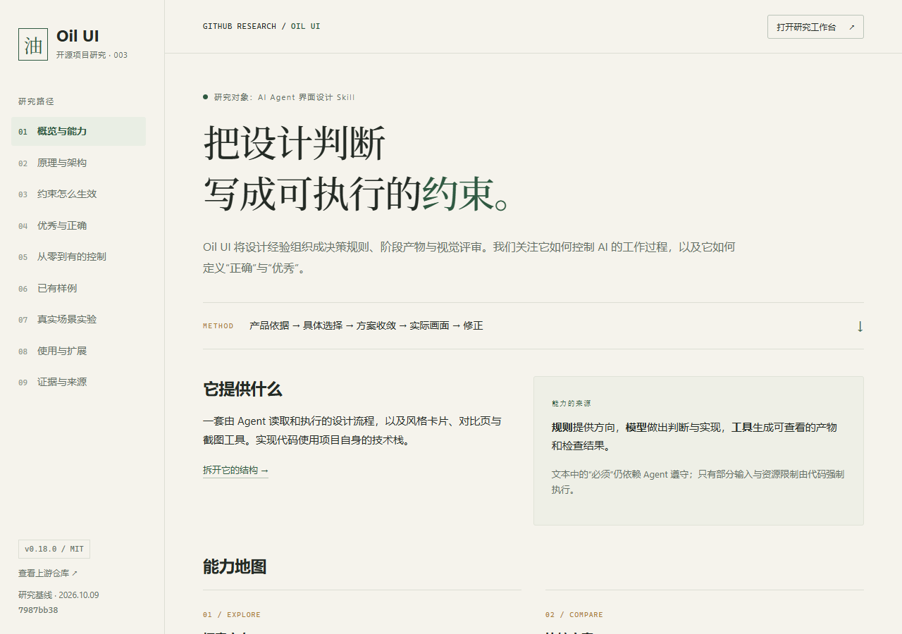
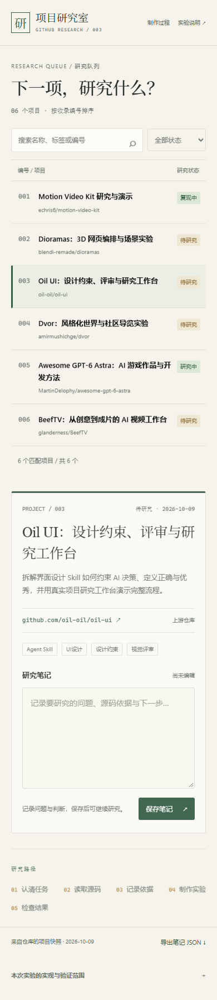

探索方向
识别品类、拆解标杆，将受众与品牌翻译成字体、配色、密度和构图。
Oil UI 用设计协议、候选比较与画面证据组织 AI 前端设计。这里完整整理它的能力、模块、原理、创意边界、个人价值与扩展方向，并保留实际工作台和实验过程。
核心可复用价值是把专家判断拆成模型能执行、用户能比较的步骤。具体实现仍由模型、素材和项目工具共同完成；规则带来的质量提升尚未通过对照实验量化。
源码基线：v0.18.0 / 7987bb38 · 2026-10-09
网页与理解整理：2026-10-12

规则提供方向，模型做出判断与实现，工具生成可查看的产物和检查结果。
文本中的“必须”仍依赖 Agent 遵守；只有部分输入与资源限制由代码强制执行。
识别品类、拆解标杆，将受众与品牌翻译成字体、配色、密度和构图。
生成风格卡片与版式对比页，支持 HTML、图片、本机开发页面。
制作网站、App 界面、后台和组件；保留项目规范，支持截图还原。
在真实视口截图、记录动效、检查可读性，依据画面提出修改。
以给定参考为基线，检查视口、比例、字形和几何关系，保持还原目标。
选择主视觉、实时 3D、视频和动效，让对象识别、状态反馈与设计方向呼应。
开源版重点是设计判断。数据流、权限、业务正确性、组件架构与工程测试由项目保障；完整的复杂交互与存量改造实践在 Pro 中。独立评审依赖隔离、能看图的执行者。
按职责归纳上游模块，区分文本方法、程序工具和项目自身能力。这里的分组用于研究阅读，并非独立运行的服务架构。
| 模块 | 输入与责任 | 输出 / 执行者 |
|---|---|---|
| 任务路由与流程 | 判断新设计、规范润色、截图还原或只读评审；决定适用步骤与交付条件 | 任务范围、设计说明；宿主 Agent 执行 |
| 设计方向 | 从受众、内容与标杆推导调性；翻译模糊词，比较候选差异 | 风格卡、方向卡、取舍理由与用户选择 |
| 视觉语言 | 组织字体、色彩、空间、层级、控件和减法；避免失去整体表达 | 页面与控件的一致关系；设计与实现判断 |
| 布局与还原 | 围绕真实内容和目标视口核对比例、裁切与阅读尺寸 | 实际页面、对照画面与尺寸调整 |
| 素材与实时 3D | 判断图像、视频或 3D 是否承担信息、情绪或交互；素材可作为结构起点 | 关键资产及其用途；宿主素材能力与项目引擎实现 |
| 动效与滚动叙事 | 规定反馈、状态来路、出场与手感；适用页面安排滚动分镜 | 动作说明、页面动画及录屏；具体代码由项目承担 |
| 风格卡片生成器 | 读取共用真实文案与 4–6 张风格配置，校验字段与控件参数 | 卡片与 style-explorer.html；Python 标准库 |
| 候选对比生成器 | 校验 manifest、ID、颜色和资源范围；组装 HTML、图片或本机页面候选 | 可查看的对比页；静态候选默认限制脚本与提交 |
| 浏览器取证工具 | 用 CDP 操作浏览器，取得视口、状态与动效；检查部分基础问题 | 截图、录屏 / 三帧、report.json；Node 与浏览器 |
| 评审交接与反馈 | 交接当前画面、任务和硬约束，隔离实现者辩护；按规则给具体差距 | 位置、证据、影响、修改建议；评审者与用户判断 |
框架、组件归属、数据流、账号权限、持久化、异常处理与工程测试。设计协议可以要求检查任务结果，无法自动保障业务可靠性。
读取文件、编码、浏览器操作、看图、素材生成及隔离评审。能力缺失时需报告验证范围；工具报告和退出码也不能代替看画面。
核心是由宿主执行的文本协议。下面的分层是对仓库结构的研究归纳；仓库未实现强制推进各阶段的工作流引擎。
用户任务 → 范围判断 → 品类与标杆 → 方向卡 → 用户选择 → 页面实现 → 评审修改
控制信息由 Agent 阅读、解释和传递。已确定的品牌、参考和交互约束优先。
卡片配置 / manifest → Python 生成器 → HTML 对比页
运行中的页面 → Node 截图工具 → 图片、录屏、report.json
工具提供结构校验与可观察证据，视觉判断仍交给用户或评审者。
| 文件 | 责任 | 实际执行者 |
|---|---|---|
| SKILL.md | 范围路由、阶段顺序、验收与交付条件 | 宿主 Agent |
| design-direction.md | 标杆、调性、方向卡、差异检验 | 设计 Agent + 用户 |
| reviewer-manual.md | 缺陷清单、评分锚点与规范对齐 | 评审 Agent / 自检 |
| build_style_cards.py | 将配置渲染为风格卡片 | Python 3.10+ 标准库 |
| build_explorer.py | 资源内嵌、manifest 校验、对比页组装 | Python + 浏览器 |
| shoot.mjs | 通过 CDP 获取截图、录屏与基础问题报告 | Node 22+ / Chrome、Edge 等 |
录屏合成 MP4 需要 ffmpeg；缺少时保留开始、中间和结束三帧。动效探测存在 Canvas / WebGL 漏检的可能。
它用“先回答什么、必须写出什么、何时停止、怎样检查”组织约束。点开一条规则，查看原文位置、执行者和实际约束强度。
密度档位、标题与正文尺度、分组间距、强调色用途、分隔方式，以及主动删除的冗余。
例如本地工作台：列表先行，详情就近，正文 15px，组内紧、组间松，用单一行动色。它们是本次设计选择，不是 Oil UI 的通用强制值。
“必须看截图”“选定后才做完整页面”是协议要求。生成器可以拒绝缺字段或越界资源，但不会自动判定字体是否有气质，也不会阻止 Agent 跳过用户选择。截图脚本的问题写入报告；不能只凭退出码判断验收通过。
方向鲜明、主流程走通、无阻断或数据丢失，关键视觉达到同类一线水平；仍有中等问题。
主流程、异常状态和细节成立，只剩可选建议；至少一处达到品类最好水平。
没有可观察的缺陷，至少一处有该品类未见过的好做法。
这是上游的评分定义，本地演示未获得独立审美评分。新界面缺少规定的动效或证据时，上游评审规定总分不超过 8 分；评分必须附具体差距。
| 任务 | 基线 | 评审方式 |
|---|---|---|
| 新界面 / 改版 | 产品任务 + 品类标杆 + 用户约束 | 视觉诊断与 1–10 分评分 |
| 已有页面润色 | 现有设计规范、变量、组件与品牌 | 指出偏离与问题，不打分 |
| 截图还原 | 参考图的视口、比例、字体与几何关系 | 对照差异，未展示尺寸作合理延展 |
作者设定评价规则，Agent 选取和解释标杆，用户确认方向，评审者判断画面。它是一套带作者偏好的设计标准，并非通用、客观的美感计算公式。用户约束和判断优先。
选择一个阶段，查看输入、约束、产物与进入下一步的条件。这里展示协议的控制逻辑，不模拟模型实时生成。
用户选定的字体、配色、版式与品牌约束写入设计说明，后续修改围绕它们进行。评审意见若冲突，应先判断是否解决原目标；只有方向不适配或用户改变目标，才重新探索。这里的“锁定”通过文档和 Agent 判断维持。
模型直接实现同样可以产生优秀作品。Oil UI 把设计步骤、候选比较、选择依据和验收要求显式组织起来；它没有训练新模型，也没有自动增加素材或渲染能力。
方向探索、规范和验收由提示与人工组织。任务已经明确、有完整设计稿或成熟组件体系时，可以很直接。
用阶段产物暴露分歧，把选定方向留下来，并要求根据当前画面修正。实际收益取决于任务、模型与执行是否到位。
| 观察点 | 直接实现时需自己组织 | Oil UI 提供的方法 |
|---|---|---|
| 设计目标 | 说明想达到的感受和功能 | 将感受翻译成可观察选择，追溯产品依据 |
| 探索空间 | 自行请求并判断备选方案 | 分阶段小样与差异检验，避免只换颜色 |
| 后续一致性 | 靠上下文和已有项目规范保持 | 记录方向、字色、控件语言与不可变条件 |
| 验收方式 | 自行安排测试、画面走查与修改 | 对当前视口与状态取证，给具体问题与差距 |
| 流程成本 | 可快速完成边界明确的任务 | 探索和证据需要时间；小改动、明确参考有简化路径 |
差异要求可能推动探索，过早锁定表达也可能排除好方案。正确性设门槛，审美保留选择；动效与模板按目标取舍。现有实验未量化约束对质量和创意上限的影响。
流程依据：核心 Skill / 差异与收敛规则。优劣与成本分析属于研究判断；查看与 3D 项目的对照及验证计划 →
以下图片随上游仓库公开发布，保留原始图片与来源。画廊作品是作者展示样例，不能据此判断由某一版本、某一条规则独立带来的提升。


独立字体厂官网：实时试字、字号与字重调节、授权选择。关注内容如何直接成为交互主角。
02 / 品牌与产品合成器产品官网：以设备为主视觉，按键与旋钮反馈构成记忆点。
03 / 组件与状态文件上传模块：拖入、进度、完成与分享状态，关注反馈和状态转换。

来源：官方画廊 / 上游仓库 assets/readme；访问日期 2026-10-09。图片与本地演示分别标注。
实际任务：从已收录的 GitHub 项目中找到下一项研究，查看依据，记录当前判断。数据来自发布版本 projects.json 的构建快照。
首屏显示项目列表与当前详情；搜索和筛选直接作用于已有项目；主要动作是记录研究笔记。
暖白画布、深绿行动色、衬线展示字与清晰正文。编号帮助定位，细线分组，避免层层卡片。
| 规则 | 界面中的落点 | 验证方式 |
|---|---|---|
| 内容型页面首屏就是对象 | 列表与详情直接进入首屏，没有宣传封面 | 桌面与 390px 手机截图 |
| 一处明确的主动作 | “保存笔记”使用唯一的强调色 | 对比按钮层级与按下反馈 |
| 状态与结果对应 | 编辑、保存成功、保存失败分别显示 | 刷新读回、注入存储失败 |
| 删除不服务任务的装饰 | 保留编号、来源、状态、笔记和研究路径 | 桌面与手机走查 |
工作台使用真实仓库项目快照。笔记保存在浏览器本机，支持导出 JSON；它不会修改仓库，也未连接 GitHub 登录或服务端同步。风格与版式由本次实现自主选定，生成器来自上游；这是一份按方法组织的本地实验，不是上游生成效果或独立质量评分。

研究目标是理解“优秀怎样被定义，并从零一步步控制”。Oil UI 是可拆解的样本：把经验变成步骤，把选择变成产物，把判断绑定当前证据。
用真实任务比较候选，减少形容词争论；用方向约定避免反复修改漂移；用实际证据区分已经实现和只是承诺。
借鉴范围路由、按需读取参考、分阶段产物与评审交接。把失败原因对应到规则，形成自己的设计控制方法。
让设计沟通有共同依据，积累品牌、取舍和评审记录。小样可能降低方向试错成本，收益仍需在真实团队验证。
迁移任务、探索、选择和验收流程，再配合资产、渲染与交互工具。方法要为作品服务，并保留视觉突破的空间。
| 任务状态 | 建议投入 | 希望得到什么 |
|---|---|---|
| 产品明确，视觉方向模糊 | 优先用方向比较和代表性小样 | 把风格分歧提前暴露，留下取舍理由 |
| 设计稿或规范已经完整 | 聚焦还原、规范对齐和真实视口检查 | 减少偏离与可观察缺陷 |
| 小改动、单个明确问题 | 直接修正，按影响范围验证 | 让流程成本与改动规模匹配 |
| 追求独特的品牌或 3D 作品 | 扩大概念探索，单独检查素材与渲染能力 | 兼顾辨识度、内容与技术完成度 |
任务与硬条件 → 不同方向 → 选择理由 → 代表实现 → 实际证据 → 修正记录
团队参考库、设计约定 schema 和阶段门禁是可扩展的工具化方向。规则不应替代用户判断；先记录一次失败为什么发生，再决定要补哪条规则。
同任务、模型、素材与设备下，比较自由生成、仅正确性条件、分阶段流程三组；记录投入并匿名评审完成度、候选差异、辨识度与修改成本。该实验尚未执行。
产品任务已确定、视觉方向未确定时，用卡片与小样减少完整实现的试错。
以有效规范为基线，检查层级、密度、对齐和重复装饰；小改动直接处理。
参考图作为约束，或只提供问题、位置、证据与调整建议，不擅自改代码。
在产品相关的一两处动作集中形成记忆点；复杂流程、状态和权限仍需要工程规范。
| 方向 | 如何扩展 | 现有能力的边界 |
|---|---|---|
| 机器可检查的设计约定 | 把品牌色、字号角色、必需状态和证据要求写成 schema，提交前校验 | 当前方向卡主要依赖文本与 Agent 判断 |
| 显式阶段控制 | 存储阶段、选择结果和产物摘要；未满足条件就不进入下一阶段 | 当前步骤顺序并非强制状态机 |
| 团队标杆与规范库 | 维护带任务标签、许可和更新时间的参考库，区分品牌硬约束与建议 | 标杆通常由 Agent 按任务选取 |
| 工程质量联合验收 | 连接项目的可访问性、持久化、异常状态和端到端检查 | 视觉协议不能保障全部业务与代码正确性 |
| 可复查的评审记录 | 绑定截图版本、视口与规则编号，分开记录缺陷和审美偏好 | 评分由评审者判断，跨模型分数不能直接比较 |
场景依据：范围说明；扩展方案为本项目研究推导，不是上游已实现功能。
7987bb38afee许可MIT · oil-oil研究日期2026-10-09加载验证记录…
加载发布检查记录…


上游样例与本地实验分开呈现。页面分层与扩展方向属于研究归纳；未将“规则写出”视作“效果已证明”。网页整理更新于 2026-10-12，源码与引导图基线保留 2026-10-09。上游引入代码与图片保留 MIT 许可，字体保留 OFL 声明。
上游许可 →本次研究的核心价值：看清专家怎样把判断拆成模型能执行的步骤，再筛选适合自己的规则。规则是否提升最终效果，仍需要对照验证。
生成前明确任务与方向，生成中比较候选并保持一致，生成后取证、评审和修改。主要适用于前端界面设计。
实现能力来自宿主模型与项目技术栈；库内提供风格卡片、对比页和浏览器取证工具。
把“高级、优秀”变成具体决定；安排发散与收敛的时机；让选择、修改和验收有记录可查。
可作为自建 UI、3D 或创意编程 Skill 的研究样本。迁移后的有效性需要另行验证。
| 需要解决的问题 | 可复用的方法 | 应用时的取舍 |
|---|---|---|
| 模糊要求难以执行 | 把感觉翻译成构图、字体、色彩、密度和动作 | 先保留多个可能的表达，选定后才固定数值 |
| 多个方案实际很相似 | 比较线框与视觉主角，要求结构性差异 | 差异必须服务任务；避免为了新奇增加操作负担 |
| 完整实现后才发现方向不合适 | 先做代表性小样，选择后再扩展 | 小样必须暴露核心任务，不能只比较漂亮封面 |
| 修改后方向不断漂移 | 记录选定方向、理由与需要保留的记忆点 | 目标改变或方向不适配时，允许重新探索 |
| 模型只声明“已完成” | 以真实操作、截图、录屏和具体问题检查 | 区分功能缺陷、视觉缺陷与个人审美偏好 |
上游的预设卡片、阶段顺序和动效评分包含作者偏好。我们的判断是：过早固定表达可能排除好方案，反复按统一评分修正也可能磨平个性。当前未通过实验测量这些影响。
平衡机制依据：设计方向 / 评审手册。右侧调整与代价分析为本项目研究判断。
| 项目 | 主要提供什么 | 效果形成的途径 |
|---|---|---|
| Oil UI | 设计决策、方案比较、评审与证据方法 | 组织方向选择和修改；实际表现由模型、资产和实现工具支撑 |
| Dioramas ↗ | 资产生成流程、3D 引擎、交互编排与评审方法 | 生成资产与光照、材质、后处理、镜头、交互共同组成场景 |
| Dvor ↗ | 具体漫游作品、程序化场景与风格化渲染代码 | 作者布局、统一配色、色带光照、描边和环境叙事形成作品 |
设计方法与技术工具承担不同责任，可以组合使用。Oil UI 支持以实时 3D 承担检视、物理交互和材质表现；Dioramas 本身也包含构建与评审流程。
对照依据：Oil UI 的 3D 指引 / Dioramas README / Dvor README。这是责任与机制对照，未进行跨项目质量排名。
上述步骤是迁移方案，尚未作为新的对照实验执行。当前研究工作台的档案风格是我们自主选择的示范方向，不能据此推断 Oil UI 的创意上限。
用同一任务、模型、素材和设备，比较“自由生成”“仅加入任务与正确性条件”“加入分阶段设计流程”三组。记录总投入；各组独立多次运行，并在相近时间预算下匿名评审，观察完成度、候选差异、最终辨识度与修改成本。
这是待执行计划，不是已有实验结论。现有工作台只证明已实现的操作链与工具能运行，尚不能量化 Skill 带来的质量提升。